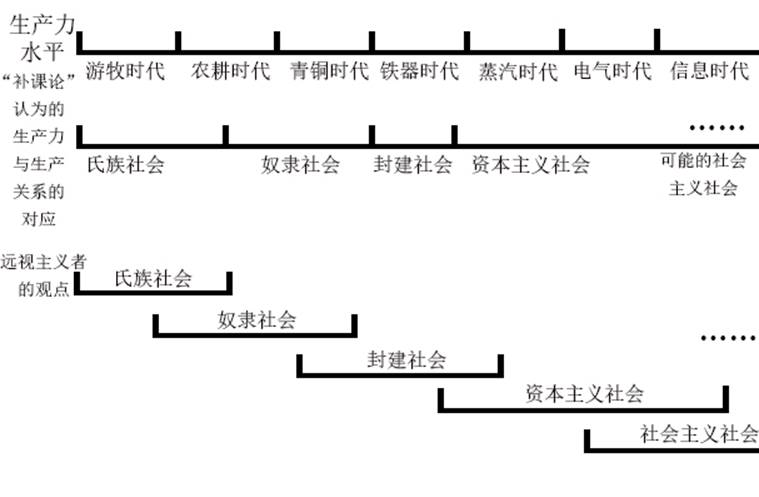
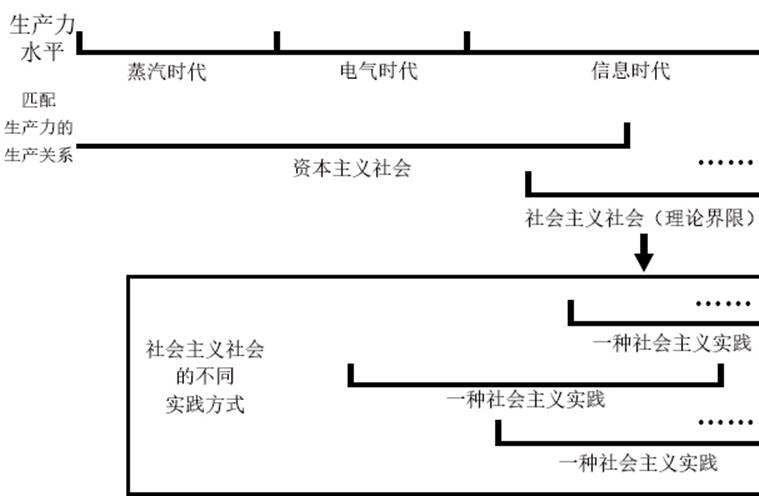
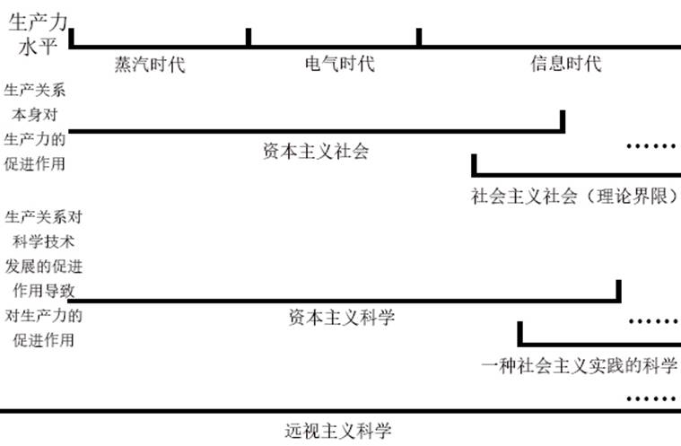

远视主义宣言（第四稿）
按
至今一切人类社会的历史都是阶级斗争的历史。
卡尔·马克思和弗里德里希·恩格斯在其伟大的著作中阐明了人类社会——至少是有历史至今的人类社会发展的一般性规律。然而，在二十一世纪的今天，社会主义的一次又一次挫折却令人们发现——历史唯物主义所预言的那个理想中的社会似乎离人们越来越远。“历史已然终结”，这是资本主义社会狂妄的宣言，而社会主义者们却迟迟无法拿出一个符合历史发展必然规律的总纲领，来反抗当今远比马克思时代更加庞大、复杂、顽固的资本主义社会，一个符合当前人类社会生产力现状的马克思主义实践纲领亟待被提出。于生产力发展和历史必然规律的要求，以共产主义社会的最终建成为总目标，现在，是时候阐明远视主义者们的要求和纲领了。
序
何为远视主义
远视主义这一概念，最早出现于游戏《钢铁雄心4》的模组“The New Order”中，是科学社会主义的一个下属分支。其核心思想，就是将阶级矛盾（本质上是生产资料分配不均导致生活资料分配不均的矛盾）转移到人民的普遍生活需求的增长与生产力发展速度的矛盾上，而生产力发展速度又很高大度上取决于科学技术的发展水平，故我们可以将其概括为：将阶级矛盾为核心的社会矛盾转移到科学技术发展与人民需要的矛盾上，即将全社会矛盾的强大力量集中于科技发展上，推动生产力发展。这本质上是符合历史发展规律的要求的，而由全体人民主观能动性共同发挥的生产力，又反过来决定新的生产、分配方式，进而更进一步满足人民中的绝大多数的生活需要。那么，我们就可以将远视主义理解为：以人的主观能动性主动加速历史的发展，这也是加速资本主义向社会主义过渡、加速社会主义向共产主义过渡的良好途径。马克思说：“一个社会形态，在他所能容纳的全部生产力发挥出来之前，是绝不会灭亡的。”为此，生产力的发展，才是灭亡资本主义社会在全世界的基础的第一要素。而远视主义，作为以发展生产力为全社会总任务的意识形态，其是真正的属于二十一世纪的马克思主义，是马克思主义在普遍运动中与新的客观现实的辩证统一，而非对马克思主义的迫害和曲解。
远视主义者的要求
一个意识形态要发展起来，必须要有其得以根植的土壤。为此，远视主义者提出的第一个要求是：取得政权。对于诸如理想主义、激进发展等批评（这一部分会在后文详细阐述），远视主义者统统接下，但必须要求用实践来验证。这样的实践的先决条件，就是完全取得一个国家的政权。而对于取得政权的形式和要求，会在后文专门部分列出。
对于思想文化领域的领导权，远视主义者也要提出自己的要求。远视主义——甚至说是一切的科学社会主义，都有将人类历史长期以来积累的旧文化全面重构的义务，并要求重建起无产阶级的新文化。对于远视主义而言，其也是引导全社会再生产方式变革来进一步促进生产力发展和巩固远视主义政权的重要武器。在全新的时代背景下，我们必须关注到在进行暴力斗争和分配方式革命等阶级性的斗争之外，使无产阶级完全掌握宣传机器和舆论武器的重要性。
远视主义者在斗争过程中对组织力量的要求是，组建起远视主义的先锋队。这样的先锋队，其最大的作用就是指导远视主义革命与建设，同时向人民群众中的一切可团结的力量宣传远视主义，以求一个远视主义的上层建筑能够以最快速度建立起来。
远视主义者还应对社会形态的发展方向作出要求。在团结一切可团结力量的基础上，必须确保远视主义革命的直接导向是建立一个远视主义的社会，并渐次实现共产主义。一个资产阶级复辟或是为部分阶级阶级、利益集团、阶层获得利益而完成的远视主义革命是不可接受的。
以上是远视主义者提出的几个最基本的要求，更多的要求，应在远视主义革命与建设的实践过程中，不断补足与修正。
远视主义公理
对于后文将要提出的一系列远视主义主义的原理，首先必须要有来源于马克思主义基本原理和人类社会发展规律的功力对其进行支撑。作为科学社会主义在新历史条件下的派生，通过质疑这些远视主义公理来质疑远视主义是没有意义的：
生产力与生产关系的相互作用
生产力水平决定生产关系，生产关系反作用于生产力——这是人类社会发展的必然规律。而在一个远视主义的社会，加速生产力发展的最直接目的就是主动促进生产关系的变革，进而推进人类社会进入更高的社会形态。事实上，生产关系本身就是生产力的一个重要要素，其也作为一种间接的生产力——我们可以将其称为再生产力，也就是在直接的生产过程之外通过分配等脱产过程实现再生产的能力——再生产力本身就是一种生产生产力的生产力。故，这样的再生产力也应作为生产力的一个与直接生产同等重要的组成部分，在远视主义对生产力进行要求时，也应对这样的再生产力进行要求，在马克思主义基本原理的指导下不断随生产力发展而对生产关系进行自我革命，进而共同促进生产力与再生产力发展。
科技爆炸
纵观人类社会，我们不难发现，自资本主义社会建立以来，人类生产力水平达到了前数千年都未达到过的高度。除生产力本身之外，生产力的增长速度也随生产关系的发展得到了提升，而且这一速度并非线性增长，而是一个指数爆炸的增长过程！整个资本主义社会在人类历史的总长上微不足道，却带来了如井喷式的科学技术发展。由此，我们可以得出一条基本规律：人类社会科学技术具有加速发展的特性，我们可以将其称作科技爆炸。科技爆炸的前提是，生产关系不会反过来阻碍生产力发展。而在一个远视主义社会，自新式的生产关系无疑会使科技爆炸保持其活力。所以，以科技爆炸带来的生产力进步为出发点，远视主义将矛盾向科技发展不断转移是行得通的。
主观能动性的产生
人的主观能动性的产生，本质上就是当主客观不相统一时为改造客观而发挥出的能动性。然而，此处“主客观不相统一”的客观，本质上是主观在对客观实践的过程中的抽象，而非客观本身。在主观能动性发挥的过程中，其对象是改变客观对主观的抽象，却在事实上改变了客观本身。这样，在主观对客观的新一轮实践中，新的对客观的认识被抽象出来，而主观本身也在实践过程中获得新的认识——也就是自身产生了改变。而后，新的主观为重新实现主客观相统一，又会发挥出新的主观能动性。这一过程，是不断辩证运动着的——辩证的普遍运动不终止，这样的主观能动性产生就也不会终止。故，以矛盾的转移导致社会压迫的减少、向共产主义过渡会导致生产力的发展停滞这一说法来指责远视主义，显然是站不住脚的。
当前形势下生产力的相对过剩
生产相对过剩，是资本主义社会矛盾在经济上的一个显著表现。然而，迄今为止的一切人类社会形态，还同时具有生产力相对过剩之一特征。在总体上，社会形态在发挥出全部生产力之前对生产力发展有正向作用。然而，这种总体上的正向作用是在生产力本身发展与社会形态对生产力发展抑制的反作用力妥协下的结果。如资本主义社会周期性的经济危机，就是社会形态对扩大生产规模、发展生产力的一种弹压。社会形态对生产力的反向抑制，本质上是由于生产力的过快发展会挑战这一社会形态剥削阶级的利益，进而改变社会形态的秩序。所以，这是一种生产力在社会形态限制下的相对过剩。但在远视主义的生产关系下，一切有利于生产力发展的因素都会被保护和利用起来。由于生产力发展本身就是维持远视主义社会存在的第一力，这样的力量越庞大，远视主义模式（将在后文阐释）就会表现的越显著。所以，远视主义取消了生产力的相对过剩，由抑制中释放出来的生产力也会作为生产力发展的一个重要组成部分。
远视主义原理
由以上这些远视主义公理，我们就可以将远视主义的组成解构了。对于构成远视主义社会形态的各个要素，可以将其称为远视主义原理。下面，就将分体系对远视主义原理进行阐释。
思想文化
远视思想
远视思想，是远视主义思想文化领域中最核心的组成部分。其要求社会中每一个主观个体在科学的、合理的范围内先于一切现有技术和理论去构思未来可能存在的科学技术。其要求社会总每一个主观个体在科学的合理的范围内先于一切现有技术和理论去构思未来可能存在的科学技术。这样的科学技术的定义是广义的，包含一切能促进生产力和再生产力进步的学科。然后，再在理论和技术范围内证明或反证其合理性，以此实现实践永远追随思想的发展而发展的局面。其中的要点，就是彻底全面地解放人类的想象力和重构科学研究体制，后者将在之后的原理中阐释。对于前者，必须充分以人的主观能动性触发，对思想、理论再到实践的革新给予足够的鼓励。教育作为先决条件，使社会主体先建立起正确的科学观和必要的理论基础（见后原理）。在国家生活中，对远视思想的成果组织专门机构进行评定、奖励和收购，授予经济利益以及荣誉。这样远视的思想在短期内大多数无法快速转换为生产力，但我们必须认识到当其具有一个国家、一个社会的庞大基数时对生产力发展强大的推动作用，这也是远视主义下人的主观能动性发挥的主要途径。在远视思想在全社会建立的另一个要点是，对“空想”标准的重定义。历史上，古埃及时期就出现过类似于蒸汽机的构型，但仅被用于打开宫殿的大门，其真正被运用与生产是在数千年之后的第一次工业革命。我们必须意识到，一个看似空想的思想可能恰是当前社会形态和经济情况无法运用的超前观点，其被运用依赖于更高层次的客观条件土壤。所以，我们应当重定义“空想”的范围，只要有利于生产力发展、社会进步和人民幸福生活，就是远视思想的合理实践，应当给予更积极的鼓励而非“空想”的批评。在远视思想的指导下，我们科学发展的模式不再是理论指导实践、实践促进理论，而是思想指引理论和实践，再由后者进一步促进思想与客观规律的结合。
众民族主义
远视主义作为科学社会主义的下分，要求全面而平等的实现全人类的解放。当远视主义的革命进入世界阶段时，远视主义者就应当为人类社会已存在数千年的民族问题做出回答。基本地，远视主义者秉持国际主义，强调民族本身是在落后生产力条件下因地理等客观因素的阻隔而形成的文化聚合体，本身不具有政治意义。而近代以来的民族国家和民族主义则是剥削阶级为转移矛盾、获得利益而异化的政治产物，根本目的是支持其压迫统治的合法性，是应当被废除和消灭的。但特殊地，远视主义这也会提出自己的新民族理论，来对抗被异化的民族主义。由于这是一种泛人类的民族主义，而“泛民族主义”一词已经存在，我们可以称其为众民族主义。众民族主义认为，界定一个民族的标准是其生产力和社会形态发展状况，而非某类基因特征、文化认同或是国境线——而后这也是众民族主义尝试消灭的重要主体。众民族主义的民族有一个鲜明概念——优等民族和劣等民族（不能以字面意思理解）。其强调以该民族生产力水平和社会形态（重点在于后者）的优劣来确定其民族性的优劣，而优等民族毫无疑问具有帮助劣等民族发展生产力、改造社会形态向更高水平靠近的义务，以希求其也进入优等民族的行列；而劣等民族的任务则是通过不断的自我革命改造自身的落后生产力、社会形态水平，并帮助社会水平更低的民族进行改造——由此可见，优、劣等民族的定义是相对的，而且随社会现状的运动而运动，直至最终消除各民族间的界限，实现人类的一体化。在此之后，远视主义革命若进入了全人类水平上的更高阶段，众民族主义也能随新的实践发挥作用。众民族主义就将民族间矛盾转移到在对劣等民族进行解放和发展所产生的矛盾，狭隘的民族主义也会就此被消灭。
新伦理与人工道德规范
在当前的社会形态和人类对客观规律的认识下，以辩证唯物主义为核心的马克思主义哲学体系毫无疑问是目前为止最正确的哲学。远视主义的社会，首先要确保的就是以正确的哲学来指导社会生活的方方面面。在当前的社会现状下，这样的哲学就是辩证唯物主义。所以，远视主义者的一个重要任务就是，重塑当今的一切旧的伦理、道德与文化，以期以更符合历史形势要求的社会形态来促进再生产力发展。这样，我们就需要人工去修正现今的道德体系——有人会质疑远视主义者在修改道德上的合法性，但实际上这样的手段自阶级社会产生以来就已存在。在阶级社会，道德本身就是统治阶级维护统治的一个重要手段，纯粹的道德是不存在的，因为他每时每刻都被剥削阶级改写和异化着，只是这一过程是隐形且缓慢的。而远视主义的人工道德规范则是显形的，塌随时随刻随历史的需要而驱动，而且其目的在于解放再生产力以满足人民中绝大多数的利益需要而不是某一个人或阶级的利益。伦理观与文化观、道德观同理，都要进行这样的改造，并且通过教育、宣传等方式使其真正运用于社会，在实践中不断与客观条件相结合。例如，在当前社会条件下对公民权的重定义。对于剥削阶级、敌对分子和触犯法律的社会主体，应当从其情节轻重对其施予部分公民权的限制和剥夺。远视主义认可个体的自由生存是社会自由发展的前提，但这样的个体仅针对于社会的正向组成部分，即拥有完整公民权的社会主体适用，对于失去部分公民权的社会主体，就可通过劳动改造等方式使其通过劳动重新获得公民权，而对于被完全永久剥夺了公民权的社会主体（这个界限必须被十分严格地区分、限制和慎用），则可以不将其作用于适用于社会主体的一般法则，由国家暴力机关或科研机关决定处置方式。当然，哲学的指导思想可能随人对客观世界的实践深入而产生运动，这时就需要新的人工道德规范重新发挥作用，这是一个不断运动着的过程。
广泛而深入的普世教育
远视主义的科学，其一个重要特征就是其来源社会主体的广泛性。要达成这一特征，就必须要进行广泛而深入的普世教育。我们注意到，阶级社会实现阶级固化的一个重要方式就是，通过教育资源分配不均等教育因素造成知识水平和社会发展前景的不均等，进而使一个阶级的下一代继续保持其阶级性。全民性的普世教育同样是解决这一阶级固化的重要途径。对于远视主义的普世教育，应当分为以下三个阶段：
（1）对于尚未获得系统研究各个科学领域能力的学生，我们应当进行逐科目的教育，主要目的是在学生进入下一阶段前掌握必须的科学观和学习能力，且必须重点关注和培养学生在某一特定领域的思想和能力，确实可行地发挥其在任意领域可能表现出的能力。这个阶段可被理解为当前教育体系中的小学~高中阶段，而关于进入下一阶段的标准，应根据社会发展的需要而变化，由远视主义的官僚体系认定标准。
（2）对于已经有能力深入研究各个深入科学领域的学生，应当由个人意愿和国家调剂共同选择自己将深入学习的科学领域，然后锚定这一领域进行时间不定的长期学习，直到在该领域取得最超前的技术和理论只是（这应当由专门的考核认定），这一阶段可能持续数年，且应保持一种半脱产半生产的状态，保证让学生不能与社会生产的相关环节脱钩，确保教育的前景不会将学生培养为一个资产阶级式的知识分子。这一阶段可以被理解为当今教育体系的学士~博士阶段。这一段学习的内容可能随理论技术的发展而增加，但同步的教育科学和脑科学等的发展会加快这一学习的过程，从而使这阶段所需的时间保持在一个较可接受的范围内。
（3）对于已经完成上述两个阶段学习的人群，将会由国家调剂留校任教或是加入生产。在生产过程中，会由所在单位提供工余教育，学习在完成两阶段教育后所处领域新出现的理论技术。由于工人生产被完全用于产出社会价值而非由剥削而产出的剩余价值，工人的保证工时将会得到大大降低，故这样的工余教育存在其生存的土壤。这个阶段可以被理解为当今教育体系中的夜校（不同的是，这个阶段是必须的），以保证工人在生产产出的同时也能带来科研产出，同时也反过来保证科学研究的不脱产性。
以上这些阶段，都应纳入远视主义国家的义务教育体制内，由国家提供教育平台和资源，并向人民免费提供（与之相关的经济问题将在后文阐述）。原则上，每个适龄公民都必须接受这三个教育中的每一个。
政治经济
工人科学
远视主义的科学，必须是无产阶级的科学，主体是工人科学，这体现在两个方面。
第一方面，是指科学研究的主体是工人。在现代资本主义国家，教育机构、研究团体和政府支持的学术团体、研究院等是科研产出的最主要阵线。然而，在一个远视主义的国家，这样的学术割据式的研究对促进生产力发展的要求来说是远远不够的，一群人或是一部分人的科研成果显然不足以实现全社会矛盾向生产力发展的长期转移。且在科学家脱产的情况下，远视的思想和技术极容易偏离社会发展的需要，造成社会资源、时间的浪费。故，远视主义者提出的要求是，仅保留极少的专职科学家，而实现全民性的科学家，我们可以将其称为工人科学。在这种体制下，要求所有进行生产的工人具备与其相关领域对应的最高科学技术理论储备，同时在工作日中穿插足够的时间（一般在不影响生产的前提下）来对工人进行当前阶段最新技术理论的培训和给予专门的科学研究时间，对于研究成果进行积极的奖励。这样，就可以让几乎全体工人在不脱产的情况下同时进行海量的科学思考和研究。同时，我们必须注意到，科学研究是一个树状发散的过程而非一个线性过程，在全领域的社会广泛研究中，技术突破的方向是不定向的，这就会比线性的研究方向更容易取得革命性的突破，进而推进产业总体升级，对生产力发展作出更大的作用。在国家人口尤其是工人基数庞大的前提下，这一成果是不可估量的。
另一方面，在科学研究的目的和前景上，远视主义科学是无产阶级科学。我们必须意识到，当代绝大多数的科学技术本质上是资产阶级科学——科学是有阶级性的。以扩大剩余价值生产规模、抢占市场分额、攫取利润、维护自身统治为出发点，是资产阶级科学的基本特征，其宏观上于生产力的进步意义是积极的，但从个体和微观出发，其直接导致了相对剩余价值的增产，进而实现了更加严格地、不均衡分配地对无产阶级的剥削。而无产阶级的科学则要求科学对生产力发展的促进作用被完全应用于改善人民生活水平、促进生产方式革新上。远视主义科学必须确保其作为无产阶级科学的纯正性，不被任何个人、组织和集团的私利而异化。
农业工业化
消灭农业——这是远视主义对生产关系的变更中最先发生的一部分。自人类进入农耕文明以来，农业一直是人类社会重要的第一产业，同时也造成了历史上及当下与农业相关的一系列阶级的产生和矛盾对立。然而，在当今社会形态下，代表农业生产的各个阶级早已失去了其先进性，成为落后生产力的代表，但由于其对经济生活不可代替的特殊地位，仍然存续在当下的社会结构中。而远视主义对生产力的强大需求和科学发展的强大潜力则要求取消这一产业及其相关的各个阶级。通过基因改造、水培等技术将原农业及其下属的林业、畜牧业等生产部门流水线化、工业化，使其成为工业下属的一个部门。这样，就将代表落后生产力水平的阶级转化为了代表先进生产力的产业工人，进而完全摆脱千年以来农业自然经济的桎梏，进一步实现生产力的飞跃。
控制论
人作为客观世界中的一个主观个体，其一切行动都必然存在主观的盲目性和目的性。在一个远视主义的国家，庞大的经济和行政系统（分别见于后文）如果任交由掌握权力的人类来管控，其就可能造成短视和可能的腐败。对于这一个拥有高科技水平的远视主义国家，使用电脑健翔辅助管理的控制论系统（OGAS，由苏联的季托夫提出）是一个好的选择。通过严谨且自新的公式与函数，计算机将使用数据和图形的方式量化每一人口的生产生活水平指标，进而辅助政府控制整个国家的生产建设。在计算迟钝且受主观因素影响的人面前，计算机的力量可以使我们以最高效和净收益最高的方式控制一个国家，同时严格立法限制人与计算机对国家权力使用的合理比例，这就是控制论。将产品分配的权力从人类手中完全剥离，确保了政府腐败无法有效发生，同时实现比人类更加精细又庞大的宏观经济的计划和调整。
模拟市场
市场经济的基本规律，决定了市场主体在市场中必然具有逐利性、盲目性和滞后性。于剩余价值的生产过程而言，其最重要的先决条件就是作为商品产生交换价值的市场存在。可以说，市场就是滋生资本主义的温床，有市场的地方就必然有资本主义的泛滥成灾。然而，传统的以斯大林模式为代表的计划经济体制又完全忽视了人主观能动性的作用，“吃大锅饭”式的模式极容易造成生产力发展的停滞。作为科学社会主义的一个下分，远视主义选择了一种折中的解决方案——模拟市场。即国家模拟出一个市场来进行产品分配。国家对于一切生产资料实行公有制，但对于除矿山、土地、能源、金属等于模拟市场运行至关重要的生产资料外的生产资料允=允许私人经营，产品可由这样的生产者进行占有。然而，在模拟市场的商品交换中，交换的对象主体都必须为国家。对于一切生产的产品，均必须在国家收购后再以限价的方式投入到模拟市场，这是模拟市场的核心，即市场并不能直接进行私人间的公开或是私自交易，而必须通过国家作为中介，任何形式的未经国家的商品交换都是违法的。这样，生产资料的经营权依然掌握在集体或个人手中，生产的决定权掌握在社会主体身上，而不限制其主动选择进行生产的主观能动性的发挥。但国家同时也把市场中商品价格限制在手中，通过控制论等手段加以严格调控，避免了市场中生产的无秩序性。同时，商品向国家出售而获得的利益属于按劳分配所得，集体或企业组织管理经营者只能获得与其管理效能相匹配的管理分配，按劳分配所得将直接分配到生产者，国家仅给予社会主体以独立生活的最低保障，一切改善生活收入都必须由按劳分配来获得，又避免了分配过程中主观能动性的丧失。同时，国家在收购与售出的过程中，是不盈利的，因为国家收入来源于国家能源生产（见后原理）而非市场，相反还可以抽出生产的超出市场商品需求的不封进行储备和补贴，自然也就不存在诸如收税这样国家从人民手中获得收入的手段。相应地，为确保模拟市场的稳定运行，必须严厉禁止一切形式的私人交易，同时对个人购买商品的最大额度进行限制，严格监控商品在私人与社会间的流通方向和目的，实行由控制论严格调控的计划经济，防止形成商品持有垄断，威胁国家经济安全。
能量本位制
在远视主义经济体制下，资本主义信用货币体系显然已不适用于远视主义的发展需要，商品交换需要一种新的一般等价物作为交换介质。在远视主义社会中最好的选择是能量。能量本身就既是一种产品又是一种生产资料，在国家彻底掌握其生产和流通的全过程后，其交换价值便能被国家人为固定下来，成为一种一般等价物，且通货膨胀、紧缩和失信的可能性几乎不存在。因为交换的全过程都有国家进行管控，且由于远视主义社会生产力的提升，国家的能量产出是极高的，除投入模拟市场流通的一部分外还吃有大量存余。这些存余可用于向外抛售以获得外汇储备、自身储备和投入科研。这一系统能够稳定存在的前提是，国家实行封闭经济，从外部经济全球化进程中脱离出去，禁止私人对外以任何形式进行的贸易，如有控制商品价格的需求，必须向外抛售商品时，则由国家来进行，产生的外汇储备也可用于进口工业原料和收购外部市场能量，并入国内能源体系。对于国内能量的流通，采取能量代币的形式，与能量实行单方面的一比一绝对挂钩。能量代币与实际能量挂钩，并只能由国家发行能量代币，私人所进行的能源生产同样必须遵循模拟市场运行规则向国家进行出售。也就是货币等同于能量，但能量本身并非货币的单向互换形式。
远视主义的上层建筑
现在，在明确了远视主义的经济基础后，我们来构建远视主义的上层建筑。首先要明确的是，远视主义的政治结构是威权式民主的，但绝不是所谓“民主集中制”。远视主义需要民主，一切个体的自由发展是全社会自由发展的前提。各生产环节中的产业部门将从基层起，实行完全民主式的选举，再向上逐层进行选举，组成该生产环节代表的委员会，各委员会再组成国家权力机关，在任期内行使国家权力。需注意的是，这个过程是不脱产的。仅参加生产的社会主体具有参与该生产部门选举的权利。而且，在权力委员会开始行使权力后，得益于现代互联网等技术的高度发达，不脱产参与政治生活是可行的，且可以使参与权力运行的委员会和委员会成员尽可能多，渐次实现直接民主制。各政府部门和公权力机关由权力机关产生并受其监督，下级委员会在任期内随时可以向上级委员会发起不信任投票或是起诉，以质询其行使公权力的正当性。这样以委员会为最基本构成单位的政治体制，是一种委员会共和制，从过程上看，这种权力的行使过程是合法的，权力由人民主动赋予，是一种民主制度。但远视主义还有一套威权制度，即先锋队制度。以政党为组织形式的先锋队是远视主义革命过程中的主要领导，由考核、选举和任命共同组成，在每个生产部门的最小单位组织党支部，并逐层产生整个党组织。党在远视主义革命和建设时期的总任务是向人民宣传远视主义和领导建设远视主义的经济、政治体制。这也就意味着，远视主义上层建筑的建立是党向人民移交、归还权力的过程。党应定期召开全国代表大会决定向人民归还权利的内容，且只能归还，不能再次剥夺。当社会进入紧急状态，民主机构无法及时响应时，党可以通过宣布紧急状态暂时获得公权力的指挥权，但如果民主政治体系对党提出不信任投票并通过，这样的状态就必须废止，向合法的公权力的民主体系移交紧急权利。从时间上看，进行社会主义和远视主义化的改造是一个长期过程，所以党向人民逐步归还权力的过程将持续的时间可能会很漫长。在这一时期内，党必须确保其在远视主义思想理论上的先进性，以领导人民向远视主义社会的过渡。从权力的赋予上来看，党权利不由人民主动赋予，是非法的，但也是在远视主义社会建立过程中所必须的。故，从这一点上看，远视主义的政治构成具有维权性。故，威权与民主共同作用，组成了远视主义社会的政治上层建筑。这样的上层建筑是无产阶级维护利益的有力工具，其目的是实现独立人的自由解放和渐次达到共产主义。
远视主义革命
远视主义的两个阶段
远视主义革命，是共产主义革命的初级条件。随着生产力的发展，可以被分为两个阶段：
1.由前远视主义社会向远视主义社会的过渡阶段
资本主义社会建立以来的几百年间，其复杂和顽固程度远远超出了之前的任何一种社会形态。《共产党宣言》发表以来进行过的尝试推翻资本主义社会的革命斗争，大多数以失败告终——或是正在失败和偏离路线的途中。远视主义者必须意识到，同资本主义社会斗争的长期性和艰巨性。思想指引时间，实践也检验思想。在远视主义革命的过程中，实践的方式可能随先前一切实践的成果而做出切合客观条件的修正，但必须坚持三个原则：生产资料的所有制必须是公有制、领导阶级必须是无产阶级，革命前景必须是建立远视主义社会以渐次达到共产主义，这也是远视主义革命第一阶段的总任务，在实践中体现在前文远视主义者的要求和《共产党宣言》中共产党人的要求中。在这一时期内，为全面实现远视主义和使人民实现远视主义的思想解放，主要领导者是远视主义的先锋队，同时在革命性质不受破坏的前提下尽可能团结一切可团结的力量。
2.由远视主义社会向共产主义社会的过渡阶段
在远视主义社会建立之后，由于阶级间矛盾的逐步消灭和阶级内部矛盾向科学技术发展转移矛盾，这一阶段远视主义革命的主要任务就是：不断促进社会生产力的发展，和进行社会形态自新的不断自我革命，向共产主义社会过渡。在这一阶段下，人类不必被继续拘束于自然条件和地球环境的限制，向宇宙发展，甚至去解放可能的同样受到压迫的其他文明——当然，这不在本文的讨论范围内。建成共产主义社会是这一阶段的发展前景，然而，与前一阶段必须坚持的原则不同，随着科学技术的不断发展，人类对客观世界认识的进一步深刻，实现共产主义的途径并不定于一尊，应随实践的深入而不断革新。以建成共产主义为目标，人民幸福生活为宗旨，远视主义社会应不断探索并进行大胆的自我革命，来进一步适应历史发展的需要，把握历史发展方向。在这一时期内，由于远视主义社会的建成，先锋队向人民移交了属于人民的权力，远视主义社会中的每一个独立自由生存的人民个体都将成为向共产主义社会过渡的中坚力量。
从一国到多国：远视主义的全球革命
在远视主义革命中的第一阶段中，推翻资本主义社会这一艰巨任务，必须要在全世界范围内进行。因为资本主义社会必然不会允许一个试图灭亡他们的异类出现，远视主义社会巨大的生产力进步也必然要靠全世界人民的共同团结奋斗实现。故，远视主义革命，必然是一场世界革命。然而，即使是更加切合历史需要的远视主义，对抗整个资本主义社会已有的庞大经济基础仍然道阻且长。故，远视主义者必须先找到一个或几个资本主义的薄弱环节，先在这些国家建立远视主义，逐步实现对资本主义世界经济基础的超越，积累远视主义革命的经验，远视主义才能在世界范围内建成。对于资本主义社会而言，远视主义最大的危险就是生产力的快速提升。故，发展科学技术进而发展生产力，实现经济基础的飞跃是远视主义革命在作为先锋队的国家中的最大任务。而后，远视主义革命就必须进入全球阶段，只有在世界范围内远视主义社会的建立，才能实现远视主义革命的最终胜利。
关于远视主义及远视主义者的一些问题
一.关于远视主义的理想主义批评问题
首先，远视主义者必须要承认的是：远视主义就是一种理想主义。但同时，也要提出一个问题：什么是理想主义？英国君主立宪制建立之前，“王在法下”的思想是否是一种理想主义？十月革命胜利前，无产阶级专政是否是一种理想主义？我们必须注意到，理想主义不是空想主义，它是人为实现主观客观相统一而提出的改造客观的方法论，具有确实可行性，问题在于其是否能被历史所选择，以及被历史选择的时间。然而，在这一过程中，实践是必须的，不在实践中与客观结合的方法论又何谈其作用？故，以“理想主义”“不切实可行”等理由来反驳远视主义而不进行实践，无疑是荒谬的。
二.关于“补课论”
“补课论”，是一些社会主义国家部分恢复资本主义制度这一行为的理论依据，强调社会主义国家因无法负担起社会主义的上层建筑而应先发展资本主义经济，而后才能发展社会主义。远视主义者部分地接受这一观点。首先，“补课论”对于生产关系匹配生产力的观点，远视主义者必须给予肯定。特定生产关系仅在一定生产力条件下对生产力发展有正向促进作用。但是，也必须反驳“补课论”的是，这样的一段生产关系匹配生产力的时期并非首尾相接，严格地层层递进，而是有所重合，可以通过如下图示来理解：

首先，远视主义者认为，“五阶段论”中五个社会形态与生产关系的匹配具有重叠，在这个重叠时期内两种生产关系均可促进生产力发展，所以在社会形态的变革时期才会出现漫长的拉锯和曲折斗争。而后，一个社会形态所能促进生产力发展的醉在接线，由它在社会形态界限之内对客观事实的切合程度和实践方式决定，那么，我们可以有第二张图示：

其次，生产力的发展主要由两方面决定：科学技术的发展和生产关系的变革。我们之前讨论的仅为后者，而前者对生产力的促进作用则是在任何社会形态下都适用的。在历史上出现过的社会会形态中，虽然在一定时期内对科学技术的发展都有过一定的直接促进作用，但这并非该社会形态促进生产力发展的最主要因素，而仅仅是作为剥削阶级取得更多剥削利益手段的附加利润之一。但远视主义社会的一个主要社会目的就是促进科学技术的发展，这可以说在任何一个生产力发展阶段都是适用的，所以我们可以将其对生产力发展的促进作用鲜明地拆分为两部分：即对科学发展的促进作用和对生产关系的再生产力促进作用两方面。这样，我们就可以得到最后一张图示：

那么，远视主义就提出了对“补课论”的修改和补充，这是一种远视主义的历史唯物主义。即，远视主义对生产力的促进从促进科学技术发展一方面来看仍适用于资本主义经济尚不发达的地区，在其生产力进一步发展后又可以继续匹配远视主义这一生产关系本身对再生产力发展的促进作用，而不必现经历资本主义社会再进入社会主义阶段，实现了从社会主义革命->资本主义恢复->社会主义再革命的曲折发展到远视主义革命->社会主义建成的螺旋上升。
三.远视主义是否是技术官僚主义
坚决不是。技术官僚制要求专家治国，由专家分析得出整个社会的发展方向，为了社会整体的发展目标甚至不惜牺牲广大人民群众的利益，本质上是一种资产阶级的精英主义政治和英雄叙事。而远视主义则强调发展的根本目的是满足人民群众幸福生活的需要，整个政治机关的组织均由人民赋予权力，受人民监督——其指导思想是辩证唯物主义而非技术官僚制的机械唯物主义。故，远视主义绝不会是技术官僚主义。
四.关于环境、资源问题
当远视主义发展遭遇环境、资源问题时，远视主义者绝不会畏首畏尾。实际上，这正是一次远视思想的大规模运用。远视主义者认为，人民幸福生活是第一要务，所以为提高生产力而进行的发展，决不能停止。而在科技高速发展的远视主义社会，大可不必畏首畏尾——地球能提供的资源和环境是有上限的，比起小拆小建、在本身就已千疮百孔的自然条件上缝缝补补，不如干脆将现存的一切环境与资源投入到研究与生产中，同时向外不断探索，减少人对地球环境的依赖——在环境毁灭人类之前先改变和主宰环境。可持续发展、生物多样性，这些本质上都是因人的力量还无法改造自然而做出的妥协。主观能动性发挥的根源就是主观对主客观相统一的需要，远视主义将彻底激发人的主观能动性，以科学技术为武器，实现改造自然、摆脱自然的桎梏，让人成为自然的主人。
远视主义模式
综合前文，一个远视主义的社会模式就可以被建立起来了：在实行生产资料公有制的基础上，国家将大部分产品和经济效益全部投入至科学研究中，科学研究再促进社会生产力的进步，进而进一步反哺国家的经济基础，实现科学技术和生产力发展的正向循环。而我们可以发现，在这一过程中，随着参与到正向循环中的社会主体的增加和经济条件的不断扩展，这个正向循环带来的生产力增长效益是呈指数级提升的！那么，随生产力的不断发展，产品分配过程中带来的阶级内矛盾就会不断被转移向人民对物质精神生活的需要科技发展速度间的矛盾，进一步促进主观能动性的发挥。这一模式的上限，进在于每个社会主体发挥主观能动性的上限。在这一过程中，生产关系主动随生产力的发展而进行自我革命，产生的再生产力同样进一步促进生产力发展。这样，人类社会实现共产主义的时间就会被人为地大大缩短了。这一过程，在共产主义社会会建成前都将在远视主义社会不断实践。这一过程的不断实践，也是远视主义社会建成的最主要标志。倘若这一模式能够完全运转于远视主义的社会生产生活中，生产力就能实现真正地、不受限制地解放，这就是远视主义模式。
远视主义纲领
基本纲领：不断满足人民幸福生活需要，向科技发展转移阶级内部矛盾，这是发展生产力的根本目的。
最低纲领：推翻世界范围内的资本主义社会，建立社会主义的无产阶级专政和生产资料公有制，建成远视主义社会。
最高纲领：实现人主观能动性的充分完全激发，实现每个社会主体的自由、独立与解放，建成发达的社会生产力和生产方式，渐次达到共产主义。
光荣啊，展望未来的人！光荣啊，大步向前的人！
咸勒个鱼_SaltedFish
2022.02.18 第一稿
2024.11.13 第四稿
附录
（一）
笔者bilibili主页： https://space.bilibili.com/513687029?spm_id_from=333.788.0.0
截止本文截稿时，笔者尚为一个高一理科学生，社会实践经验和政治经济学知识水平还十分有限。读者若有对本文任何的修改意见和建议，欢迎读者通过B站私信与笔者进行讨论和给出宝贵的修改建议。笔者能力有限，也欢迎更加专业的读者接手和完善本文。希望远视主义思想长青，能于人类历史上留下属于自己的一笔。
（二）
游戏《钢铁雄心4》模组The New Order中的远视主义：https://www.bilibili.com/video/BV1pK41187xM/?spm_id_from=333.337.search-card.all.click&vd_source=c84eadbd415cd409f2babff3b37be03c
需要注意的是，本文所描绘的远视主义意识形态图景最初受The New Order中的该虚构意识形态启发，但在进一步完善和修改远视主义意识形态内容的过程中产生了极大量的扩展和分歧，应当说The New Order中的远视主义是本文中远视主义意识形态的脱胎和极初级阶段。故，将本文内容与The New Order中的远视主义强行一一对应、类比和重合是不恰当的。
（三）
远视主义意识形态旗帜：